Michelangelo Merisi da Caravaggio
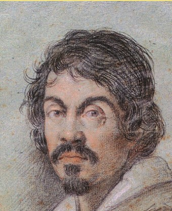
Caravaggio (1571–1610) olasz festő, aki a barokk festészet egyik legnagyobb alkotója volt. Különleges stílusa a világosság és árnyék különbségein alapul, és gyakran használta a történelmi és vallási témákat.
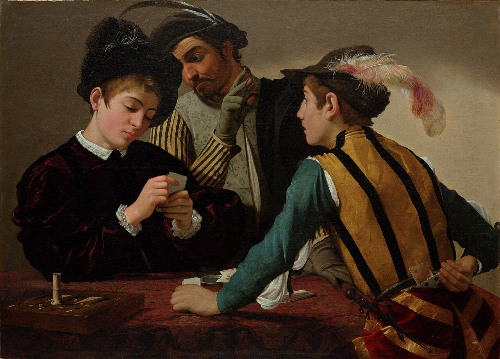
Hamiskártyások: Caravaggio 1595 körül készült híres barokk zsánerképe, amely azt ábrázolja, hogyan ejt csapdába egy rutinos kártyás és ifjú társa egy naiv ifjút.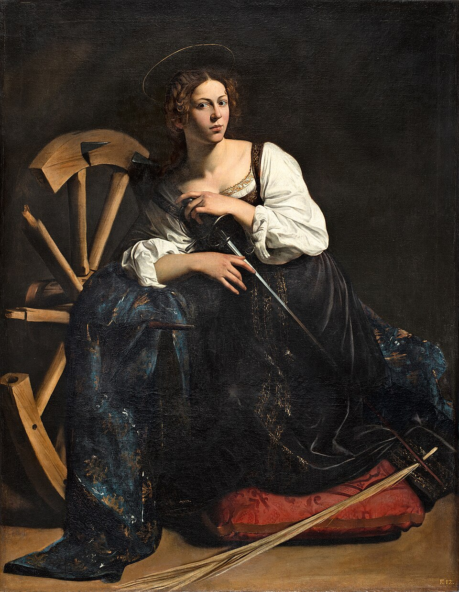
Alexandriai Szent Katalin: Katalin közvetlenül a néző szemébe néz. Ruházata előkelő, de a korabeli római divatot követi, ami emberközelivé teszi a szentet.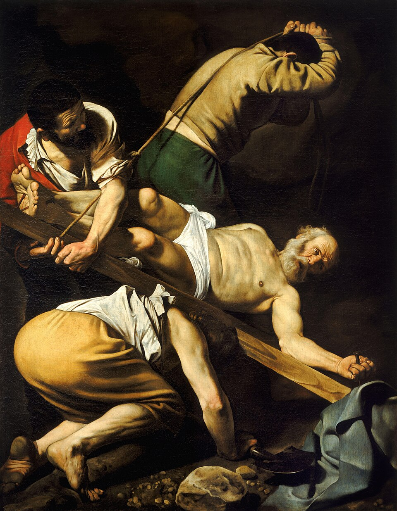
Szent Péter keresztrefeszítése: Caravaggio nem egy idealizált, távolságtartó vallásos jelenetet festett, hanem a kivégzés nyers, fizikai megterhelését ábrázolta. A munkások erőlködése, a piszkos lábak és az éles fény-árnyék kontrasztok (tenebrizmus) szinte tapintható közelségbe hozzák a drámát.
Peter Paul Rubens
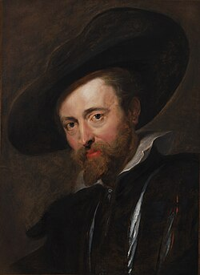
Peter Paul Rubens (1577–1640) flamand festő, aki a barokk festészet egyik legnagyobb alkotója volt. Különleges stílusa a mozgás, az érzelmek és a dinamikus összeállítások kiemelése, és gyakran használta a történelmi és vallási témákat.
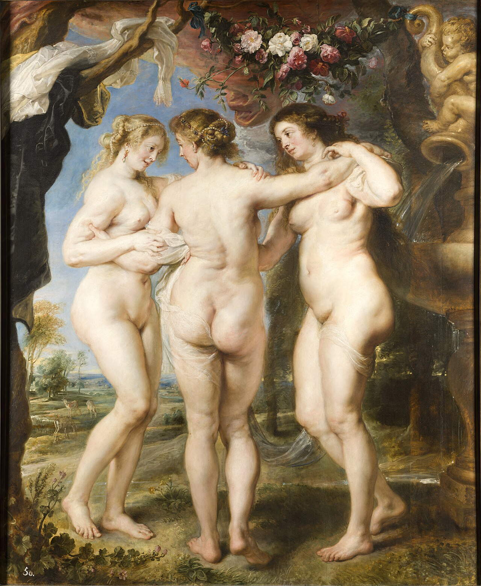
A három grácia: A festmény a görög mitológia három gráciáját, a szépség, a báj és a vidámság istennőit ábrázolja. A három nő egymást átölelve, harmonikus körben áll. Rubens a női test szépségét, a természetességet és az életörömöt jeleníti meg élénk színekkel és lágy formákkal.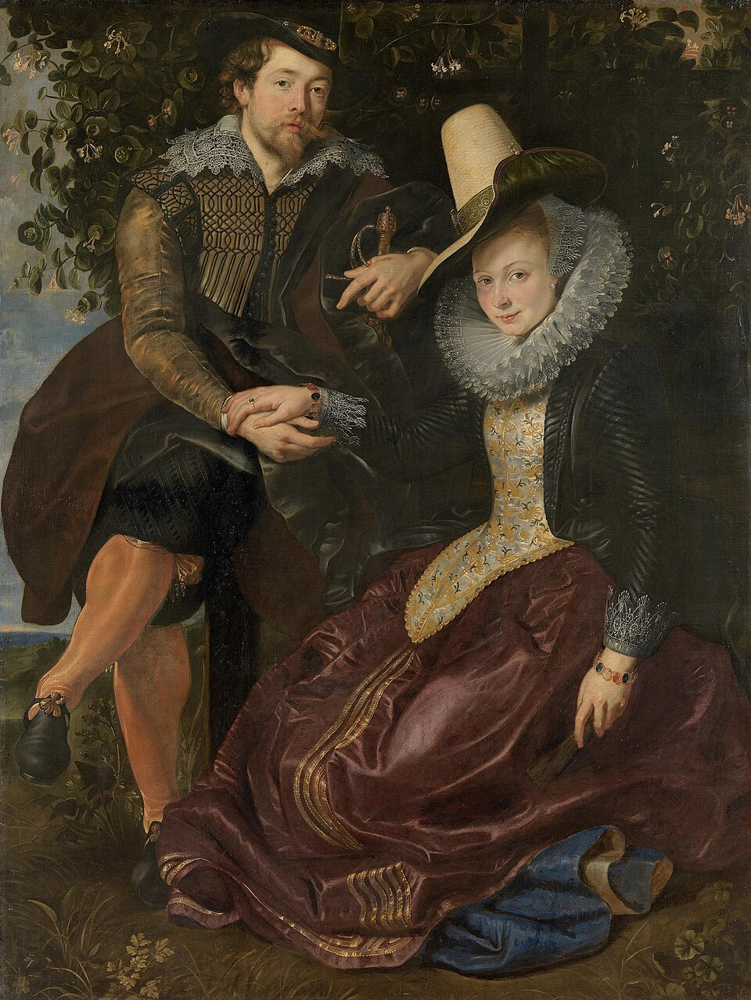
Rubens és Isabella Brant: Peter Paul Rubens és Isabella Brant 1609-ben házasodtak össze. Isabella Brant Rubens első felesége volt, akit a festő nagyon szeretett, és több festményén is megörökített. Közös portréjukon egy virágzó loncbokor előtt ülnek, egymás kezét fogva. A festmény a szerelmet, a hűséget és a házastársi összetartozást jelképezi. Rubens boldog házasságuk emlékét örökítette meg ezen a bensőséges hangulatú alkotáson.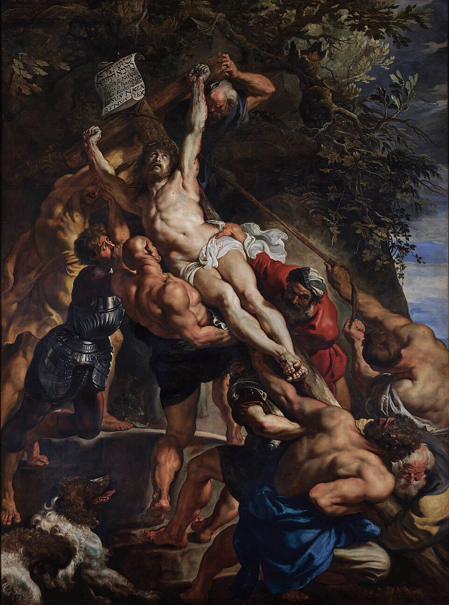
A keresztelő: A festmény Jézus Krisztus megkeresztelkedésének bibliai jelenetét ábrázolja. Keresztelő Szent János megkereszteli Jézust a Jordán folyóban, miközben a jelenetet égi fény és angyalok teszik ünnepélyessé. Rubens mozgalmas kompozícióval, erőteljes színekkel és drámai fényhatásokkal érzékelteti a jelenet vallási jelentőségét.
Rembrandt van Rijn
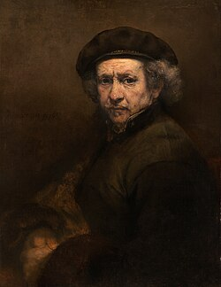
Rembrandt van Rijn (1606–1669) holland festő, aki a barokk festészet egyik legnagyobb alkotója volt. Különleges stílusa a fény és árnyék használatában rejlik, és gyakran ábrázolta az emberi érzelmeket és a vallási témákat.
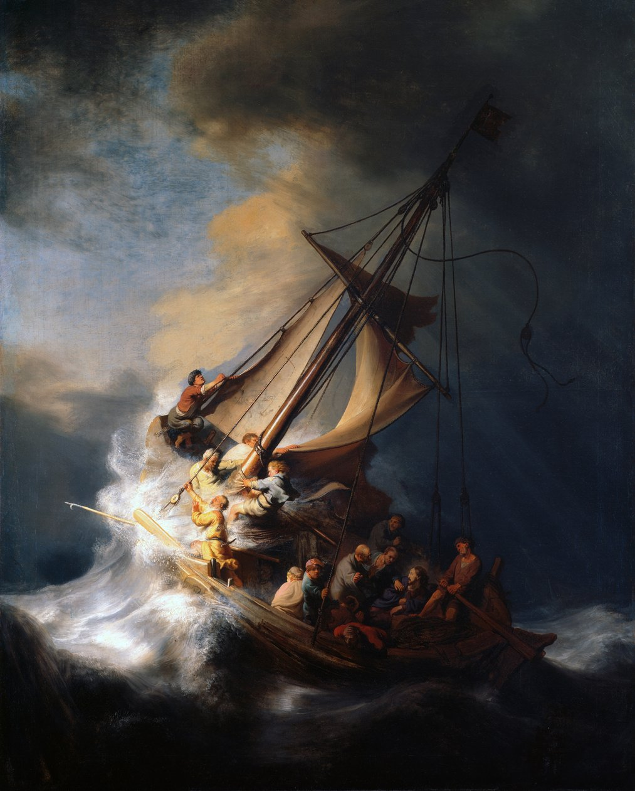
Krisztus a viharban a Galileai-tengeren: A festmény Jézus és tanítványai történetét ábrázolja, amikor egy hatalmas viharba kerülnek a Galileai-tengeren. A tanítványok kétségbeesetten próbálják irányítani a hajót, miközben Jézus nyugodt marad. Rembrandt a fények és árnyékok segítségével érzékelteti a vihar erejét, a félelmet és a kiszolgáltatottságot. A
tékozló fiú hazatérése: A festmény a Biblia egyik ismert példázatát mutatja be. A fiatal fiú
hosszú vándorlás és sok hiba után hazatér édesapjához, aki szeretettel és megbocsátással
fogadja. A kép a szeretetet, a megbocsátást és a családi összetartozást jelképezi. Rembrandt
különösen az érzelmeket és a szereplők közötti kapcsolatot hangsúlyozza.
A
tékozló fiú hazatérése: A festmény a Biblia egyik ismert példázatát mutatja be. A fiatal fiú
hosszú vándorlás és sok hiba után hazatér édesapjához, aki szeretettel és megbocsátással
fogadja. A kép a szeretetet, a megbocsátást és a családi összetartozást jelképezi. Rembrandt
különösen az érzelmeket és a szereplők közötti kapcsolatot hangsúlyozza. Pallasz Athéné (páncélban): A
festmény Pallasz Athénét, a görög mitológia bölcsesség és hadviselés istennőjét ábrázolja.
Az istennő díszes páncélt és sisakot visel, megjelenése erőt és méltóságot sugároz.
Rembrandt a részletgazdag ruházattal, a fényekkel és az árnyékokkal hangsúlyozza az alak
tekintélyét és különleges szépségét.
Pallasz Athéné (páncélban): A
festmény Pallasz Athénét, a görög mitológia bölcsesség és hadviselés istennőjét ábrázolja.
Az istennő díszes páncélt és sisakot visel, megjelenése erőt és méltóságot sugároz.
Rembrandt a részletgazdag ruházattal, a fényekkel és az árnyékokkal hangsúlyozza az alak
tekintélyét és különleges szépségét.
Diego Velázquez

Diego Velázquez (1599–1660) spanyol festő, aki a barokk festészet egyik legnagyobb alkotója volt. Különleges stílusa a mozgás, az érzelmek és a dinamikus összeállítások kiemelése, és gyakran használta a történelmi és vallási témákat.
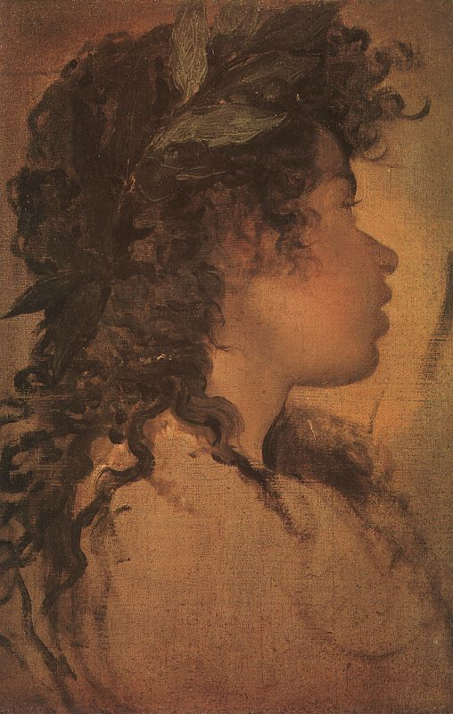
Apolló arcképe: A festmény Apollót, a görög mitológia istenét ábrázolja. A portrészerű megjelenítés kiemeli az isten fiatalos arcát, göndör haját és nyugodt tekintetét. A festményen Velázquez a fények és árnyékok segítségével teszi életszerűvé az alakot.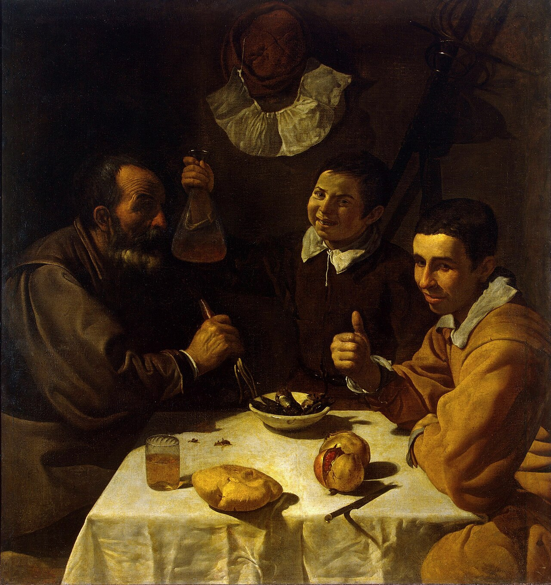
Ebéd: A festmény három embert ábrázol, akik egy asztal körül ülve közösen étkeznek. Az asztalon különböző ételek és italok láthatók. A szereplők természetes arckifejezése és testtartása egy hétköznapi pillanatot idéz. Velázquez a mindennapi élet egyszerűségét és az emberek közötti kapcsolatokat mutatja be.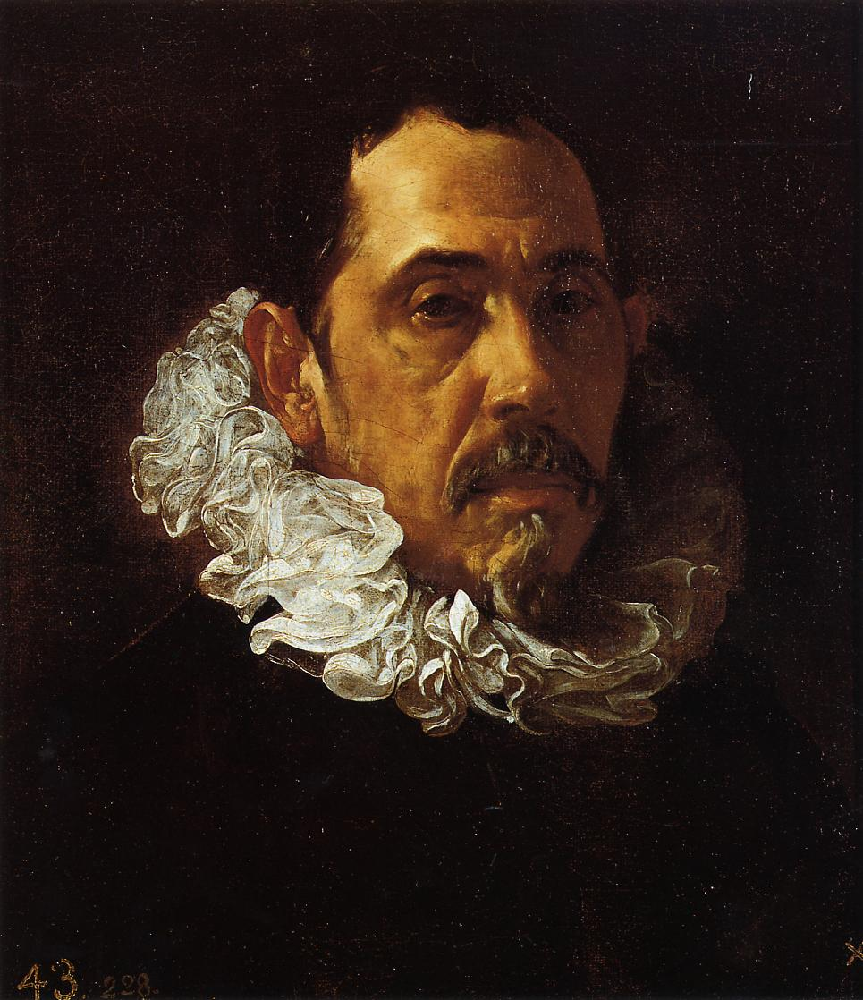
Pacheco: A festmény Francisco Pachecót, Velázquez festőmesterét és apósát ábrázolja. Pacheco fontos szerepet játszott Velázquez művészi fejlődésében. A portré élethűen mutatja be az idős férfi arcvonásait, komoly tekintetét és személyiségét. Velázquez a valósághű ábrázolásra és az apró részletekre helyezte a hangsúlyt.
Johannes Vermeer
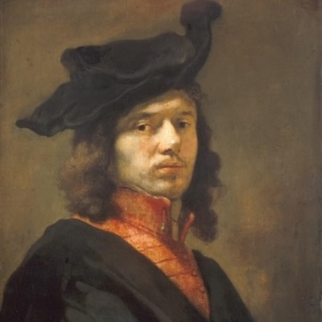
Johannes Vermeer (1632–1675) holland festő, aki a barokk festészet egyik legnagyobb alkotója volt. Különleges stílusa a mozgás, az érzelmek és a dinamikus összeállítások kiemelése, és gyakran használta a történelmi és vallási témákat.
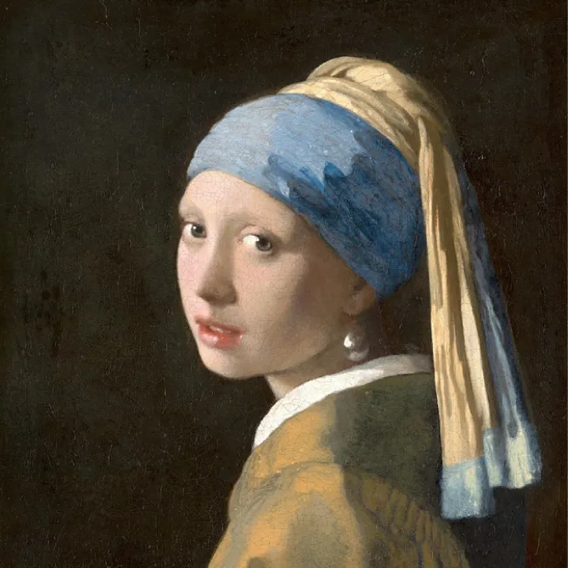
Leány gyöngy fülbevalóval: A festmény egy fiatal lányt ábrázol, aki a válla fölött hátranéz a nézőre. Különlegessége a nagy, fényesen csillogó gyöngy fülbevaló és a lágy fények használata. A lány kék-sárga turbánt visel. A kép titokzatos hangulatot áraszt, és Vermeer egyik legismertebb alkotása.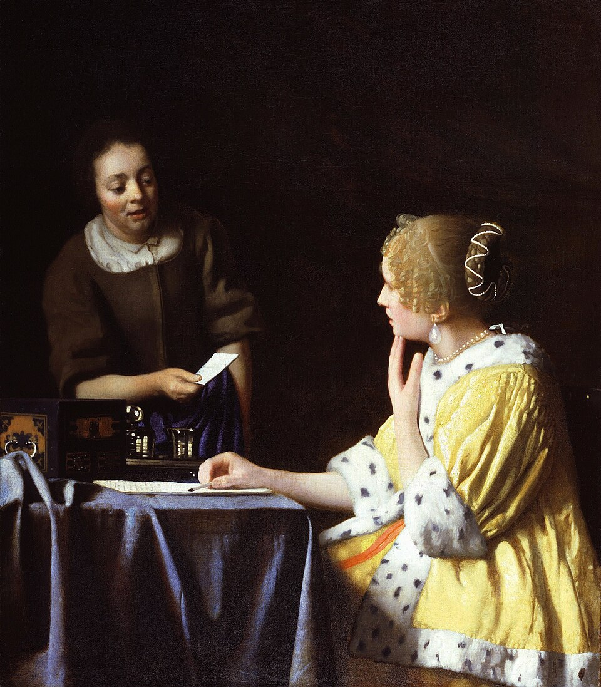
Úrnő és szobalány: A festmény egy elegáns úriasszonyt és a szobalányát ábrázolja. A szobalány egy levelet ad át úrnőjének, aki éppen az írását olvassa. A kép a mindennapi élet egy pillanatát mutatja be. Vermeer a fényekkel, a színekkel és a részletes kidolgozással teremti meg a festmény különleges hangulatát.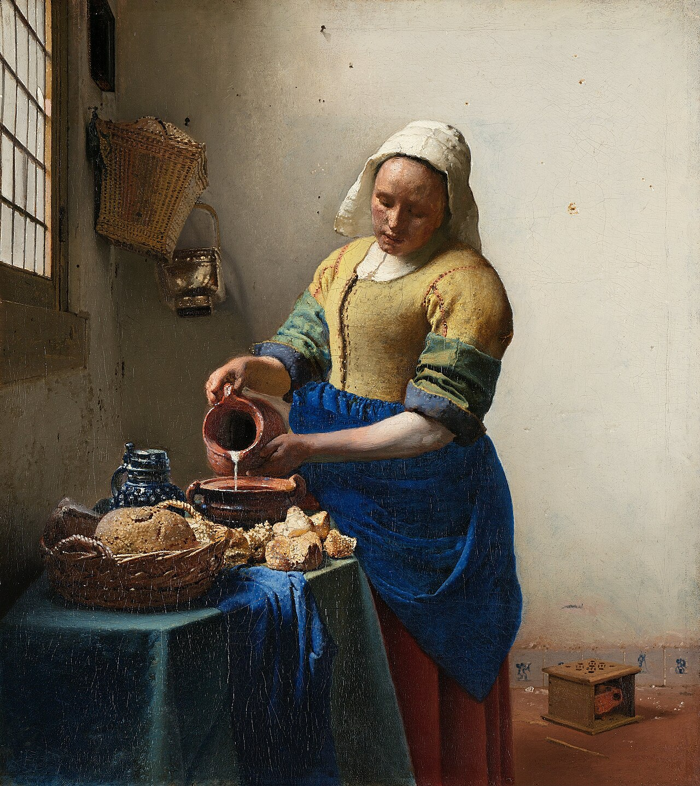
Tejet öntő nő: A festmény egy fiatal szolgálólányt ábrázol, aki tejet önt egy edénybe. A jelenet egy egyszerű konyhában játszódik, ahol kenyér és más használati tárgyak is láthatók. Vermeer a hétköznapi munkát nyugodt, harmonikus módon mutatja be. A festmény különlegessége a természetes fény és a részletgazdag ábrázolás.
Mányoki Ádám
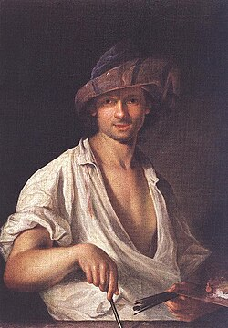
Mányoki Ádám (1673–1757) magyar festő akia barokk kimagasló magyar portréfestője.Főként fejedelmek, uralkodók és főurak megörökítéséről vált ismertté.
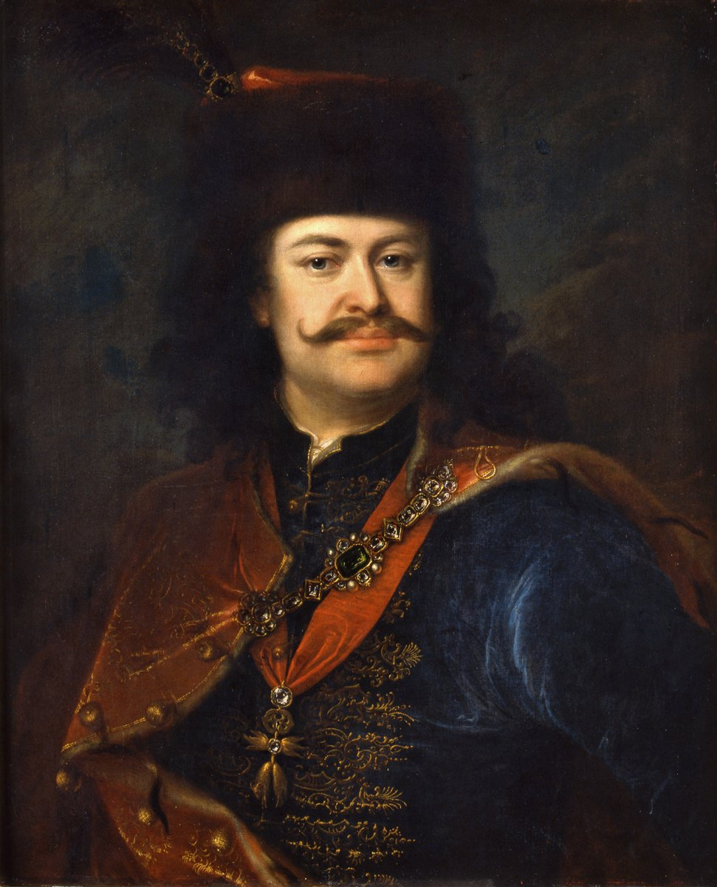
II. Rákóczi Ferenc képmása: A festmény II. Rákóczi Ferencet, a Rákóczi-szabadságharc vezetőjét ábrázolja. Díszes, előkelő ruházatot visel, amely tekintélyt és méltóságot sugároz. Mányoki Ádám részletesen kidolgozta az arcot és az öltözéket, így a portré hűen tükrözi Rákóczi korabeli megjelenését.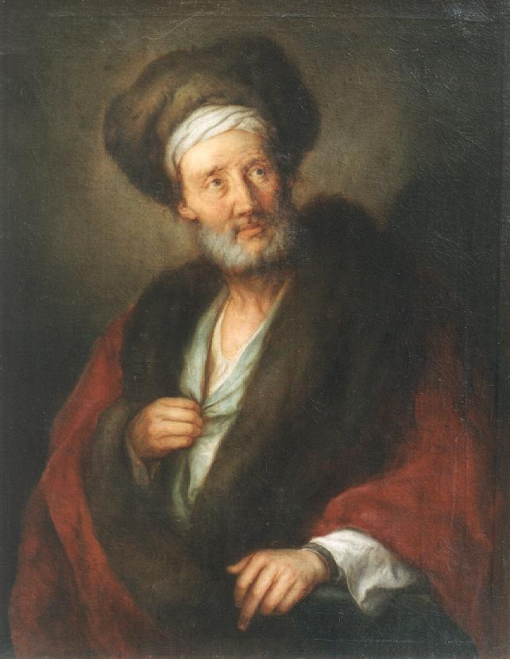
Lengyel férfi arcképe: A festmény egy elegáns lengyel férfit ábrázol korabeli öltözékben. A művész nagy figyelmet fordított az arcvonások, a ruházat és a részletek kidolgozására. A portré az adott korszak előkelő férfiainak megjelenését és öltözködési stílusát mutatja be.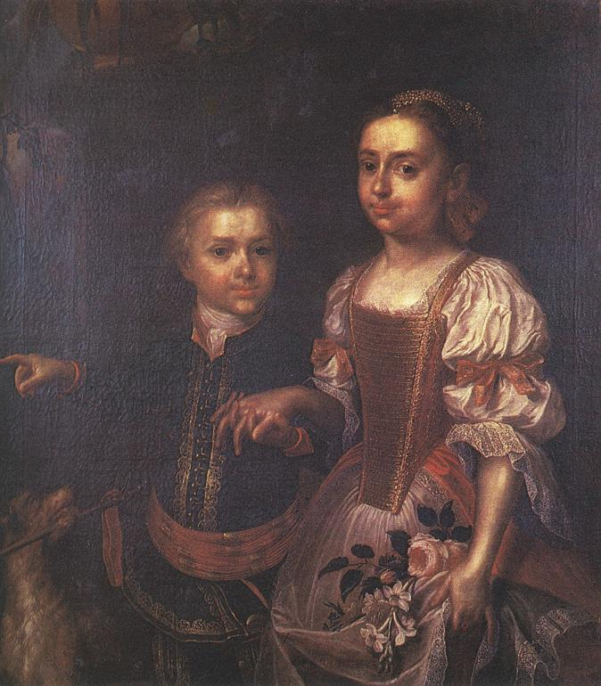
Podmaniczky Judit és János képmása: A festmény Podmaniczky Juditot és Jánost ábrázolja. A kettős portré bemutatja a korabeli magyar nemesi családok öltözködését és társadalmi helyzetét. A díszes ruhák, a gondosan megfestett arcok és a részletek az előkelőséget és a családi összetartozást hangsúlyozzák.